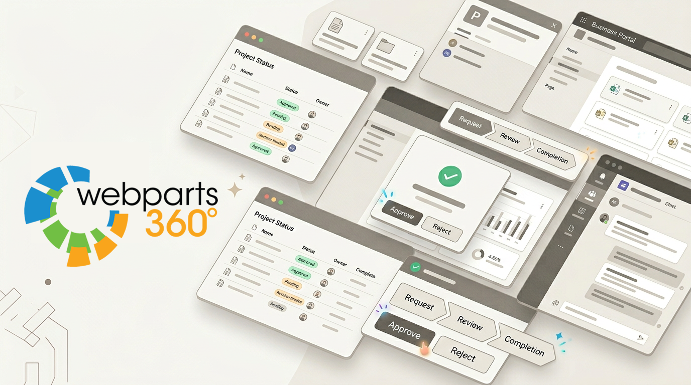
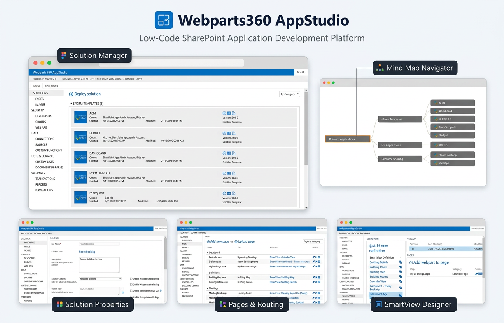
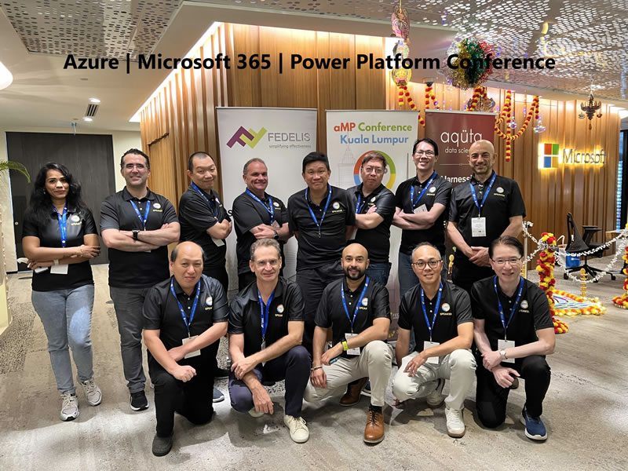
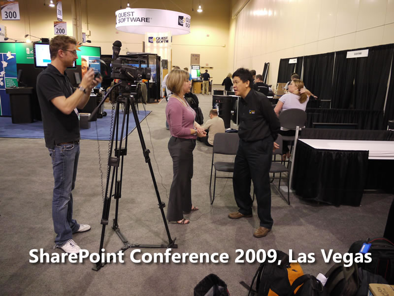
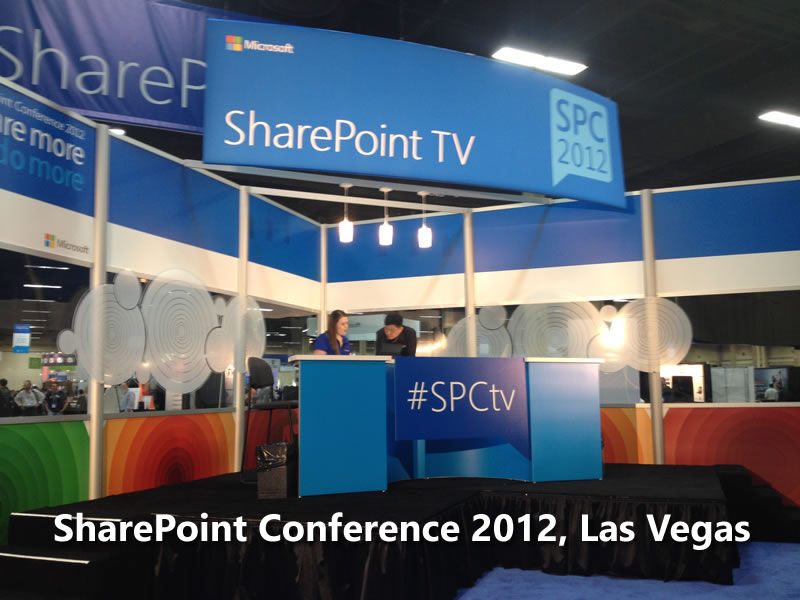
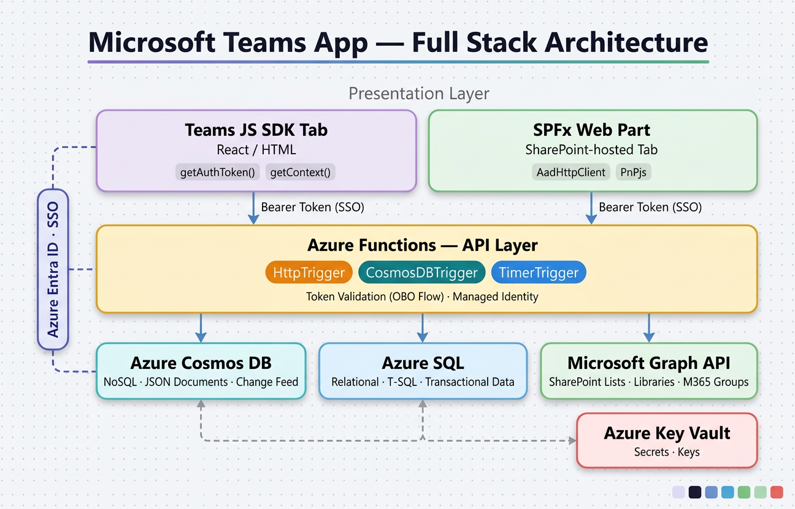
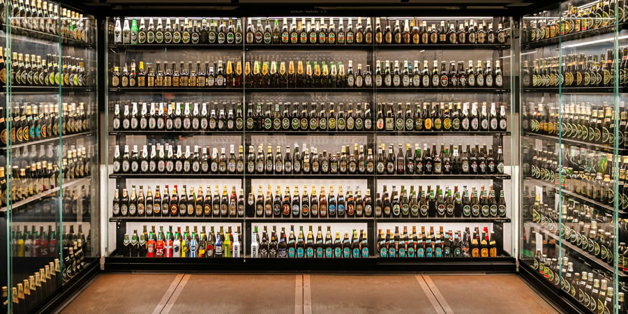
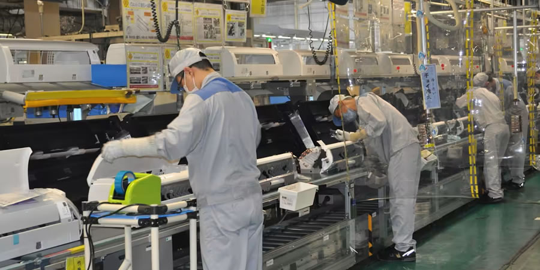

Since 2007 · SharePoint to Teams evolution
1,000+
Applications migrated and modernized
3X faster
Delivery using configurable webparts
19+ years
Microsoft 365 platform expertise
Business-critical workflow apps built inside Microsoft 365
CRN Solutions helps digital transformation teams and Microsoft partners deliver SharePoint, Teams, and AI-enabled business applications faster, with less technical debt and better alignment to the Microsoft environment their users already trust.

The engine behind our solutions
Webparts360: our web IDE for SharePoint Online
Webparts360 is the in-house framework that made us famous: a web IDE for SharePoint Online that lets us build business applications from three configurable building blocks—input, process, and output. It helps us deliver multi-state, document-heavy workflows faster while keeping performance under control and upgrades predictable.
-
1
Configure, don't constantly recode
Use XML settings, HTML for UI, and T-SQL for transaction logic to configure forms, processes, and views instead of rebuilding each app from scratch. -
2
Stable through Microsoft 365 evolution
The same model has carried solutions from earlier SharePoint generations into SharePoint Online, turning upgrades into structured package-and-redeploy steps. -
3
Tuned for serious workflows
Built for multi-state, document-centric workflows where approvals, documents, and performance matter—and where internal IT wants to stay inside existing M365 infrastructure.

Trust and credibility
Built for discerning clients and delivery partners
Recognized with regional ICT awards and trusted by the Microsoft MVP community, we've supported conferences and enterprise projects across Malaysia, APAC, and global Microsoft 365 ecosystems.
Asia Pacific ICT Award

Conference Organizer
SharePoint Conference
SharePoint TVWhat we do
Specialist services for organizations that already live in Microsoft 365
We help clients extend SharePoint, Teams, and Microsoft 365 into operational systems of engagement without defaulting to disconnected tools, unnecessary complexity, or fragile one-off builds.
Custom M365 workflow applications
Build approval systems, requests, case handling, dashboards, and operational workflows inside SharePoint and Teams with business-ready structure from day one.
AI-enabled business solutions
Add intelligent assistance, triage, summarization, and decision support to workflows where users already collaborate, instead of creating yet another disconnected app.
Migration and modernization
Move legacy internal applications, aging workflow solutions, and collaboration-heavy processes into modern Microsoft 365 experiences with lower long-term debt.
Why it works
A proven way to build serious internal systems without overengineering the stack
Our approach focuses on the three essentials every business application needs: data entry with processing, output for interfaces and reporting, and role-based navigation. That foundation makes it possible to deliver complex business solutions faster while staying close to the Microsoft platform your teams already use.
- 1Reduce technical debt
Keep more of the workload within Microsoft 365 instead of proliferating disconnected services and custom stacks. - 2Move faster
Use proven building blocks and delivery experience to launch and evolve business-critical solutions more quickly. - 3Support real operational complexity
Handle approvals, reporting, collaboration, and process visibility for serious internal workloads. - 4Work with senior specialists
Engage a boutique team with decades of Microsoft collaboration delivery experience.

Featured product
SmartBPM brings your workflow engine closer to where work already happens
SmartBPM is CRN Solutions' productized workflow capability for organizations that need configurable approvals, process visibility, form-based transactions, and structured collaboration inside Microsoft 365.
- ✓Configurable forms, process steps, and business logic
- ✓Inbox, notifications, dashboards, and approval visibility
- ✓Designed to work within SharePoint and Teams environments
Representative solutions
Proof from business-critical use cases
Because many of our clients operate under strict confidentiality, we present representative industry cases that demonstrate workflow complexity, platform depth, and business relevance without disclosing identities.

Dealer approval workflows for a major brewery and distributor
Built the systems of engagement supporting sales and marketing approvals before confirmed transactions were posted into SAP.
SharePoint
Approvals
SAP-adjacent workflow
Operational reporting for an Australian private hedge fund
Implemented prime broker margin call reporting and portfolio optimization workflows using SharePoint for a sophisticated financial operations context.
Reporting
SharePoint
Finance operations

R&D and ECN coordination for a global manufacturer
Supported structured product and engineering workflows inside SharePoint for research, change management, and cross-functional coordination.
R&D workflow
ECN
Manufacturing
Why CRN Solutions
Not a generic dev shop. A challenger specialist in Microsoft-native business applications.
Your buyers need to know why they should choose you over a Power Platform-first build, a generic software house, or an internal team piecing things together under pressure.
Deep platform history
You have delivered on Microsoft collaboration platforms through multiple technology cycles since 2007.
Faster solution delivery
Your reusable delivery approach supports faster outcomes without sacrificing structure or maintainability.
Better fit for internal workloads
You focus on serious operational workflows inside tools users already know rather than forcing another application estate.
Boutique seniority
Clients engage specialists who understand collaboration architecture, process design, and practical enterprise delivery.
HRDF-claimable training
Pragmatic Modern Work masterclasses for your teams
We design hands-on, HRDF-claimable training that reflects how people actually work with Microsoft 365 and AI. Choose from public intakes or in-house, 1–2 day masterclasses that connect tools to real collaboration, reporting, and people-operations scenarios.
SharePoint Masterclass
A 2-day, hands-on course where participants build a working intranet on Microsoft 365 – combining SharePoint, Teams, and Planner for collaboration, document management, lists, simple approvals with Power Automate, better search, and practical governance.
Essential Power BI
A dashboard-in-a-day style introduction to Power BI. Participants learn how to connect and shape data, build interactive reports with drill-through, and publish dashboards that business stakeholders can actually use to make decisions.
Pragmatic AI series
A 2-day executive deep dive into applying AI tools such as ChatGPT, Claude, Gemini, Copilot and Perplexity to specific workloads – including HR analytics, recruitment, L&D, and HR operations – with exercises tailored to your context.
Start the conversation
Book a discovery call to assess your Microsoft 365 workflow opportunity
If you are deciding between SharePoint, Teams, Power Platform, custom development, or modernization of a legacy internal system, we can help you identify the right architecture and the fastest path to value.